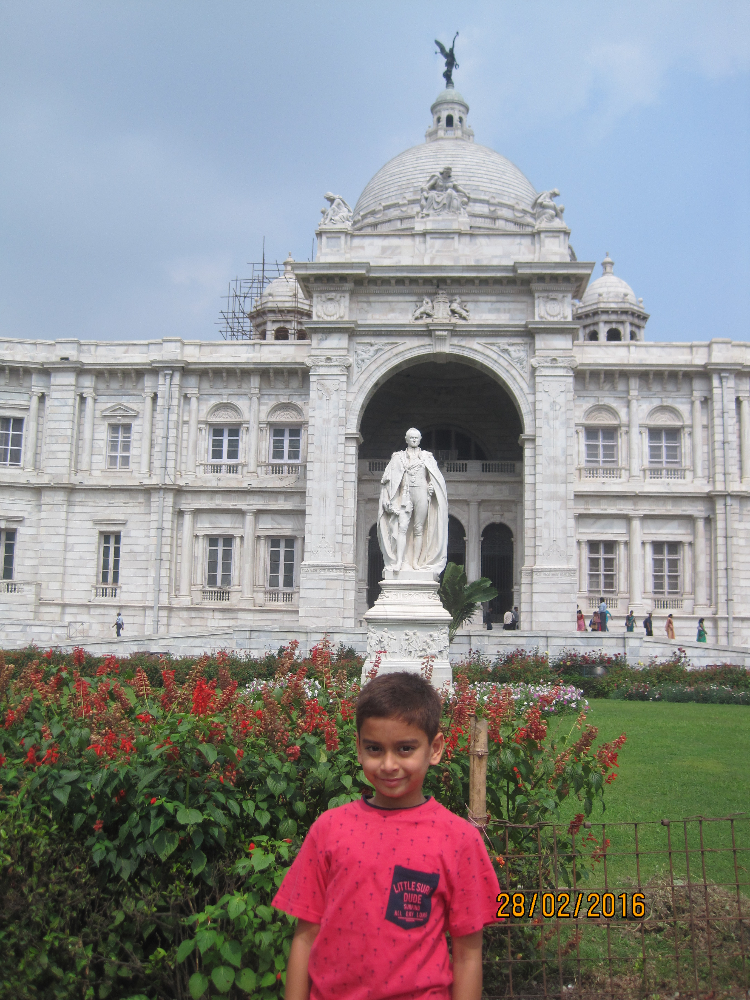
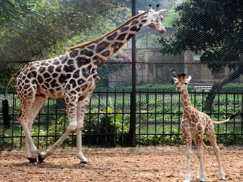
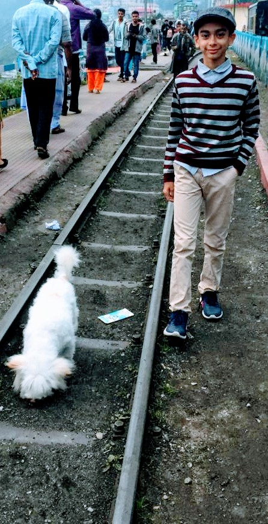
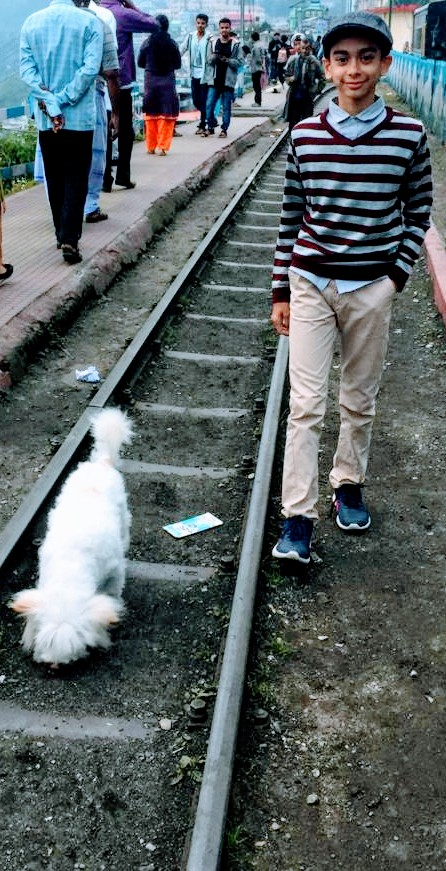

Victoria Memorial
The Victoria Memorial is a large marble building on the Maidan in Central Kolkata, having its entrance on the Queen's Way. It was built between 1906 and 1921 by then British government. It is dedicated to the memory of Queen Victoria, Empress of India from 1876 to 1901.
Howrah Bridge

Howrah is one of the most preferred tourist destination. There are many places of attraction that can explore in Howrah. Of all the sightseeing attractions, one of the most significant sightseeing spot is the Howrah Bridge that is a cantilever bridge. It is one of a kind and is also the sixth largest bridge in the whole world. It is 2150 feet in length with a suspending span that right above the Hooghly River.
Alipore Zoo
The Alipore Zoological Gardens in Kolkata is popularly known as Alipore Zoo or Calcutta Zoo. It is India’s oldest formally stated zoo and is the busiest tourist attractions in Kolkata, West Bengal. Spread across an area of 46.5 acres, the zoological garden was established and opened for visitors in 1876. Alipore zoo is most famous for having been a home to several indigenous species of mammals, reptiles and birds, spanning over the past 140 years.
Kalimpong

Kalimpong is an east Indian hill town in the Himalayan foothills of West Bengal. Perched on a ridge above the Teesta River, it’s home to colonial-era buildings like MacFarlane Memorial Church, named after a Scottish missionary. South, the hilltop Durpin Monastery, or Zang Dhok Palri Phodang, contains sacred Buddhist scriptures. Deolo Park has landscaped gardens and offers views of the town and surrounding hills.
Darjeeling
 

Darjeeling District is the northernmost district of the state of West Bengal in eastern India in the foothills of the Himalayas. The district is famous for its hill station and Darjeeling tea. You can take the toy train ride. Old Ghoom Monastery is the popular name of Yiga Choeling. The monastery belongs to the Gelukpa or the Yellow Hat sect and is known for its 15 feet-high statue of the Maitreya Buddha.